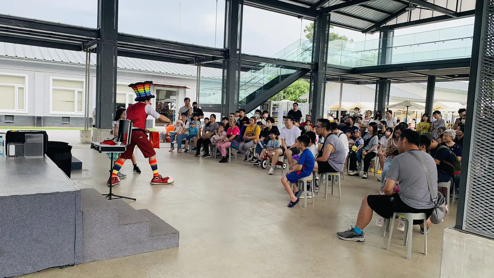
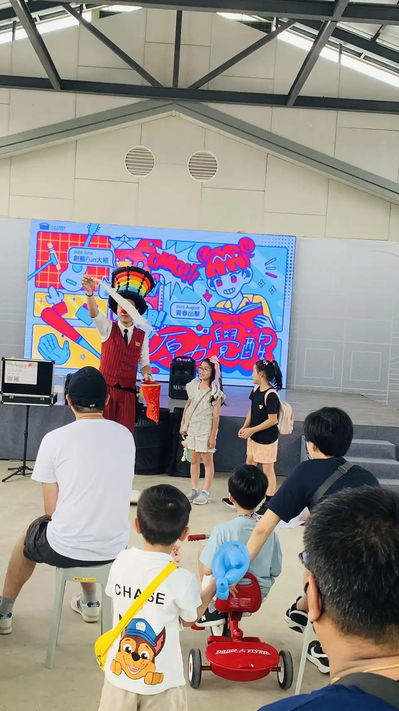
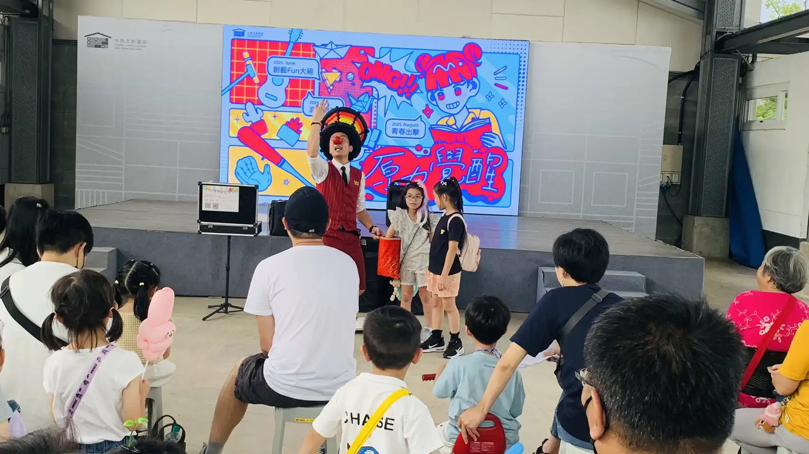

桃園中原文創園區：一場充滿歡笑的街頭氣球魔術盛宴
文創場域引流秀 × 零距離魔術互動｜氣球大叔 Sony 用創意點亮城市角落
📍 地點：桃園市 中原文創園區
桃園文藝地標：氣球魔術與創意的激盪
2025 年盛夏，氣球大叔 Sony 受邀來到充滿藝文氣息的 桃園中原文創園區。在原為舊營區改造的開放空間中，氣球大叔透過極具辨識度的彩虹帽裝扮與幽默口才，迅速打破與遊客間的隔閡。這場表演不僅是視覺上的享受，更是透過 氣球藝術 成功地為園區帶來了高張力的人氣引流，為當天的市集增添了無限歡樂氛圍。

街頭藝人精髓：零距離的魔法奇蹟
不同於一般室內舞台的距離感，在中原文創園區的演出強調的是「隨時隨地發生驚喜」。Sony 將一顆顆平凡的氣球轉化為生動的卡通角色與奇幻造型，並穿插充滿懸念的魔術橋段。無論是 大型光譜氣球帽 帶來的震撼感，還是邀請小朋友上台互動的溫馨時刻，都讓在場觀眾感受到 桃園街頭表演 的最高水準。


- ✨ 高能見度引流： 獨特的造型與音樂配合，成為園區內最吸睛的流動焦點。
- 🤝 跨世代連結： 讓不同年齡層的觀眾都能在「當下」共享同一份單純的喜悅。
- 🎨 文創場域適配度： 表演風格完美融入文創市集氛圍，提升整體活動品質。
「現場氣氛超熱鬧！孩子們被氣球大叔逗得樂開懷，特別是他頭上那頂彩虹帽子，太有記憶點了！」 — 桃園在地家長參觀心得
結語：專業活動引流與街頭表演首選
氣球大叔 Sony 具備豐富的 文創園區、百貨商場、戶外市集 演出經驗。我們擅長將空間特性與表演內容結合，為場域創造話題與停留時間。若您的活動需要 高親和力、高話題性 的互動表演，歡迎聯繫 Sony，一同創造難忘的魔法時刻。
🔥 更多桃園在地與大型慶典精彩案例：
- 👉 官方大型活動：桃園新住民家庭日｜多元文化主題氣球魔術秀
- 👉 桃園綠能節慶：桃園綠色生活悠遊節｜蜜蜂氣球人 × 綠能互動表演
- 👉 指標景點演出：圓山花博 MAJI 集食行樂｜市集氣球魔術秀紀實
- 👉 校園畢業季：桃園中堅幼兒園｜畢業典禮驚喜氣球魔術表演
💡 關於桃園市集街頭氣球魔術表演的常見問題
- Q: 在桃園中原文創園區這類半戶外市集，氣球大叔的魔術表演適合在哪種場地進行？
- A: 中原文創園區腹地廣大，氣球大叔 Sony 擁有豐富的街頭與戶外市集表演經驗。我們自備專業行動音響，不需要主辦單位提供複雜舞台。只要在走道節點或市集空地保留約 3x3 公尺的互動區域，就能迅速凝聚人潮，將原本的過道轉變為充滿歡笑的街頭劇場。
- Q: 文創市集的人潮通常是流動的，氣球表演如何有效達到引流與聚客的效果？
- A: 街頭表演的精髓在於「視覺張力與主動出擊」。Sony 會以極具辨識度的彩虹氣球帽與繽紛裝扮登場，並搭配輕快音樂。透過零距離的幽默對話與高強度的魔術驚喜，我們能瞬間吸引路過家庭的目光，讓遊客停下腳步參與互動，有效為市集攤位帶來更長的停留時間。
- Q: 除了魔術表演，現場的造型氣球發送可以配合桃園在地或特定文創主題嗎？
- A: 當然可以！我們非常鼓勵主辦單位將活動理念與氣球藝術結合。針對桃園在地節慶或特定文創主題，氣球大叔能客製化設計專屬的氣球造型。透過互動問答的方式送出這些精緻作品，不僅能讓孩子們開心，更能加深參與者對整體市集活動的品牌記憶點。
🎈 正在尋找桃園市集街頭氣球魔術表演嗎？
如果您也希望為您的活動創造像現場一樣爆棚的人氣與驚喜，氣球大叔 Sony 是您的首選！我們專注於提供高品質的互動演出與情境佈置：
- 百貨商場活動：中庭舞台秀、假日聚客、週年慶造勢。
- 品牌行銷推廣：新品發表會、門市開幕、VIP 客戶派對。
- 親子家庭日：企業家庭日、社區晚會、私人慶生派對。
📅 本文整理於 2025 年 7 月 27 日，完整紀錄真實活動現場氛圍。